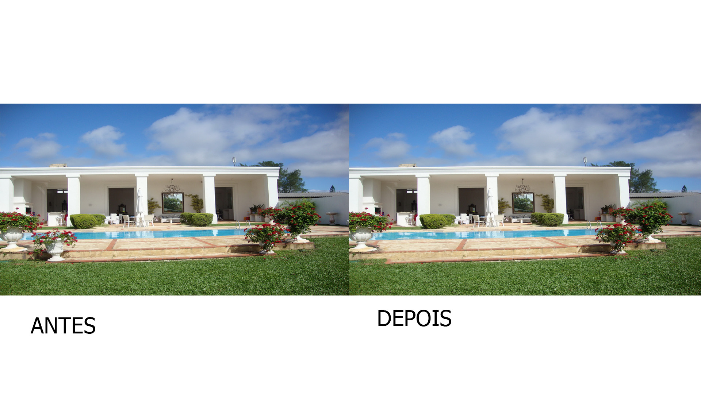

Este foi a nossa primeira imagem no photoshop onde aprendemos sobre camadas e como funcionava as fontes:

No dia das mulheres fizemos uma imagem homenageando todas as mulheres:

Aprendemos a inserir uma tatuagem em uma pessoa com o uso do photoshop e colocamos efeitos na imagem:

Com esta imagem aprendemos a remover algo com a ferramenta carimbo do photoshop:
